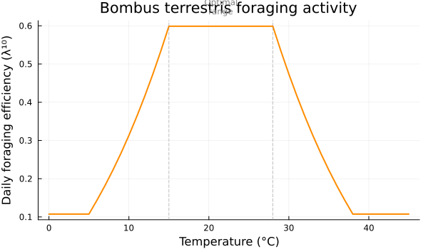
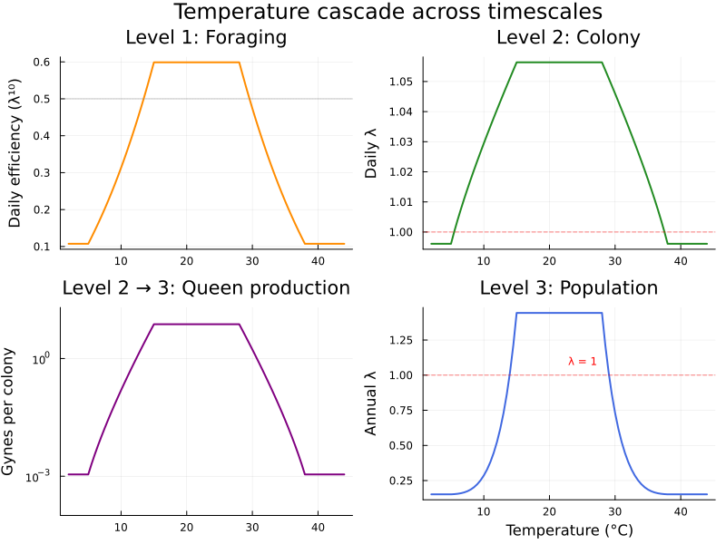

Multi-Timescale Colony Dynamics
Simon Frost
Overview
Bumblebee colony dynamics span multiple timescales: individual foraging bouts operate on an hourly scale, colony-level demography plays out over days, and population persistence is determined by annual queen production and overwintering survival. This vignette demonstrates timescale nesting — a compositional tool that embeds fast-timescale models inside transitions of slower-timescale models. Changes at the foraging level automatically propagate upward through the hierarchy, enabling clean sensitivity analysis of how environmental drivers (e.g., temperature) at the finest scale cascade to population-level outcomes.
We construct a three-level nested model for Bombus terrestris:
| Level | Timescale | Resolution | Model |
|---|---|---|---|
| 1 | Foraging bout | Hourly (10 h/day) | Worker activity states |
| 2 | Colony dynamics | Daily (150 d/season) | Brood → nurse → forager |
| 3 | Population | Yearly | Queen → colony lifecycle |
The ⋉ (\ltimes) operator nests inner models into outer transitions, and the full hierarchy is materialized recursively by to_matrix.
Setup
using CategoricalPopulationDynamics
using CategoricalPopulationDynamics: ⊕, ⊘, ⋉
using LinearAlgebra
using StructuredPopulationCore: lambda
using PlotsBiological Background
Bombus terrestris is an annual-cycle bumblebee. A mated queen emerges from hibernation in spring, founds a colony alone, and rears the first cohort of workers. The colony grows through a worker-production phase (~120 days), followed by a sexual phase producing males and new queens (gynes). New queens mate, enter diapause, and — if they survive the winter — found the next year’s colonies.
Foraging is the colony’s lifeline: workers collect nectar and pollen to sustain brood development and adult maintenance. Foraging activity is strongly temperature-dependent — B. terrestris forages across a wide thermal range (5–38 °C) but peaks at 15–28 °C (Corbet et al., 1993; Kwon & Saeed, 2003).
Colony productivity depends on the balance between worker emergence (a slow process with ~22-day brood + nurse periods) and forager mortality. The number of gynes produced over a season determines the colony’s contribution to the next generation.
Population persistence hinges on the founding-success × gyne-production × overwinter-survival chain. Climate warming may benefit populations in cold regions but push warm-edge populations past thermal limits.
Level 1: Foraging Bout Model
We model individual worker activity as a two-state Markov chain operating on an hourly timescale. Workers are either idle (resting, guarding, nursing) or actively foraging. The transition from idle → active depends on ambient temperature via a triangular activity function calibrated from B. terrestris behavioral data (Corbet et al., 1993; Kwon & Saeed, 2003).
"""
foraging_activity(T)
Temperature-dependent foraging activity for *B. terrestris*.
Triangular response: ramp up 5–15°C, plateau 15–28°C, ramp down 28–38°C.
"""
function foraging_activity(T)
T < 5.0 && return 0.0
T < 15.0 && return (T - 5.0) / 10.0
T ≤ 28.0 && return 1.0
T ≤ 38.0 && return (38.0 - T) / 10.0
return 0.0
end
function make_foraging_vpn(T)
a = foraging_activity(T)
activation = ValuedProjectionNet([:idle, :active],
:activation => [(:idle => :active) => 0.35 * a])
deactivation = ValuedProjectionNet([:idle, :active],
:deactivation => [(:active => :idle) => 0.15])
persistence = ValuedProjectionNet([:idle, :active],
:persistence => [(:idle => :idle) => 0.60,
(:active => :active) => 0.80])
return activation ⊕ deactivation ⊕ persistence
endmake_foraging_vpn (generic function with 1 method)At optimal temperature (20 °C), the foraging model is:
foraging_20 = make_foraging_vpn(20.0)
A_forage = to_matrix(foraging_20)
println("Foraging matrix (20°C):")
display(A_forage)
println("\nλ_forage = ", round(lambda(A_forage), digits=4))
println("Daily efficiency (λ^10) = ", round(lambda(A_forage)^10, digits=4))Foraging matrix (20°C):
λ_forage = 0.95
Daily efficiency (λ^10) = 0.5987
2×2 Matrix{Float64}:
0.6 0.15
0.35 0.8The dominant eigenvalue λ \< 1 reflects that workers cycle through activity states with some loss (mortality, failed trips). Raised to the 10th power (10 active hours per day), this gives the daily foraging efficiency — the fraction of maximum food collection actually achieved.
# Temperature sweep of foraging efficiency
T_range = 0:1:45
forage_eff = [lambda(to_matrix(make_foraging_vpn(T)))^10 for T in T_range]
plot(T_range, forage_eff,
xlabel="Temperature (°C)", ylabel="Daily foraging efficiency (λ¹⁰)",
title="Bombus terrestris foraging activity",
linewidth=2, color=:darkorange, legend=false,
size=(600, 350))
vline!([15, 28], linestyle=:dash, color=:gray, alpha=0.5, label="")
annotate!(21.5, 0.65, text("Optimal\nrange", 8, :gray))
Level 2: Colony Dynamics
The colony model tracks three stage classes on a daily timescale, adapted from Khoury et al. (2011) and Banks et al. (2017):
- Brood: eggs and larvae (~22-day development period)
- Nurse: young adult workers tending brood (~20-day period)
- Forager: mature workers collecting resources
development = ValuedProjectionNet([:brood, :nurse, :forager],
:development => [(:brood => :nurse) => 0.045, # 1/22 ≈ 0.045
(:nurse => :forager) => 0.050]) # 1/20 = 0.050
survival = ValuedProjectionNet([:brood, :nurse, :forager],
:survival => [(:brood => :brood) => 0.920,
(:nurse => :nurse) => 0.930,
(:forager => :forager) => 0.900])
reproduction = ValuedProjectionNet([:brood, :nurse, :forager],
:reproduction => [(:forager => :brood) => 2.0])
colony_base = development ⊕ survival ⊕ reproductionValuedProjectionNet{Float64}(CategoricalPopulationDynamics.LabelledProjectionNet:
S = 1:1
T = 1:3
Src = 1:3
Tgt = 1:3
Name = 1:0
src_t : Src → T = [1, 2, 3]
src_s : Src → S = [1, 1, 1]
tgt_t : Tgt → T = [1, 2, 3]
tgt_s : Tgt → S = [1, 1, 1]
sname : S → Name = [:stage]
tname : T → Name = [:survival, :development, :reproduction], [:brood, :nurse, :forager], Dict(:survival => [(:brood => :brood) => 0.92, (:nurse => :nurse) => 0.93, (:forager => :forager) => 0.9], :development => [(:brood => :nurse) => 0.045, (:nurse => :forager) => 0.05], :reproduction => [(:forager => :brood) => 2.0]))The :reproduction transition represents egg-laying enabled by forager food collection. We nest the foraging model into this transition: the base rate (2.0 eggs per forager-day) is multiplied by daily foraging efficiency.
foraging_emb = TimescaleEmbedding(make_foraging_vpn(20.0), 10, :lambda)
colony_nested = colony_base ⋉ (:reproduction => foraging_emb)
println(colony_nested)NestableVPN{Float64}(3 stages, 3 transitions, 1 embeddings)
:reproduction ⋉ TimescaleEmbedding(steps=10, extract=lambda)The returned object is a NestableVPN — a ValuedProjectionNet augmented with TimescaleEmbeddings. We can inspect the embedded summary directly without going through to_matrix:
colony_nested isa NestableVPNtrue# extract_summary runs the inner model and returns the scalar that
# scales the outer :reproduction transition.
inner_A = to_matrix(make_foraging_vpn(20.0))
foraging_yield = extract_summary(inner_A, 10, :lambda)
round(foraging_yield, digits = 4)0.5987A_colony = to_matrix(colony_nested)
λ_colony = lambda(A_colony)
println("Colony matrix (20°C):")
display(round.(A_colony, digits=4))
println("\nλ_colony = ", round(λ_colony, digits=4))
println("Effective reproduction rate = ", round(A_colony[1,3], digits=4),
" eggs/forager/day")
println("Seasonal growth (λ^150) = ", round(λ_colony^150, sigdigits=3))Colony matrix (20°C):
λ_colony = 1.0564
Effective reproduction rate = 1.1975 eggs/forager/day
Seasonal growth (λ^150) = 3730.0
3×3 Matrix{Float64}:
0.92 0.0 1.1975
0.045 0.93 0.0
0.0 0.05 0.9Level 3: Population Dynamics
The population model operates on a yearly timescale with two stages:
- Queen: hibernating mated queens (overwinter in diapause)
- Colony: established colonies producing gynes
founding = ValuedProjectionNet([:queen, :colony],
:founding => [(:queen => :colony) => 0.25]) # 25% founding success
gyne_prod = ValuedProjectionNet([:queen, :colony],
:queen_production => [(:colony => :queen) => 1.0]) # placeholder
overwinter = ValuedProjectionNet([:queen, :colony],
:overwinter => [(:queen => :queen) => 0.15]) # 15% winter survival
population_base = founding ⊕ gyne_prod ⊕ overwinterValuedProjectionNet{Float64}(CategoricalPopulationDynamics.LabelledProjectionNet:
S = 1:1
T = 1:3
Src = 1:3
Tgt = 1:3
Name = 1:0
src_t : Src → T = [1, 2, 3]
src_s : Src → S = [1, 1, 1]
tgt_t : Tgt → T = [1, 2, 3]
tgt_s : Tgt → S = [1, 1, 1]
sname : S → Name = [:stage]
tname : T → Name = [:overwinter, :founding, :queen_production], [:queen, :colony], Dict(:overwinter => [(:queen => :queen) => 0.15], :founding => [(:queen => :colony) => 0.25], :queen_production => [(:colony => :queen) => 1.0]))The :queen_production transition is scaled by seasonal colony productivity. We nest the entire colony model (which itself contains the nested foraging model) into this transition, creating a 3-level recursive hierarchy:
colony_emb = TimescaleEmbedding(colony_nested, 150, :lambda, scale=0.002)
population = population_base ⋉ (:queen_production => colony_emb)
println(population)NestableVPN{Float64}(2 stages, 3 transitions, 1 embeddings)
:queen_production ⋉ TimescaleEmbedding(steps=150, extract=lambda, scale=0.002)A_pop = to_matrix(population)
λ_pop = lambda(A_pop)
eff_queens = evaluate(colony_emb)
println("Population matrix (20°C):")
display(round.(A_pop, digits=4))
println("\nEffective queens per colony = ", round(eff_queens, digits=2))
println("Population λ = ", round(λ_pop, digits=4))
if λ_pop > 1
println("→ Population GROWING ($(round((λ_pop-1)*100, digits=1))% per year)")
else
println("→ Population DECLINING ($(round((1-λ_pop)*100, digits=1))% per year)")
endPopulation matrix (20°C):
Effective queens per colony = 7.46
Population λ = 1.4431
→ Population GROWING (44.3% per year)
2×2 Matrix{Float64}:
0.15 7.4644
0.25 0.0Temperature Sensitivity Analysis
The key advantage of the nesting framework is that we can sweep an environmental driver at the lowest level and let changes propagate automatically through the entire hierarchy. We rebuild the foraging model at each temperature and let to_matrix recursively evaluate all three levels.
T_sweep = 2.0:0.5:44.0
results = map(T_sweep) do T
# Level 1: temperature-dependent foraging
forage = make_foraging_vpn(T)
forage_emb = TimescaleEmbedding(forage, 10, :lambda)
# Level 2: colony with nested foraging
colony = colony_base ⋉ (:reproduction => forage_emb)
λ_c = lambda(to_matrix(colony))
# Level 3: population with nested colony
col_emb = TimescaleEmbedding(colony, 150, :lambda, scale=0.002)
pop = population_base ⋉ (:queen_production => col_emb)
A = to_matrix(pop)
λ_p = lambda(A)
(T=T, forage_eff=evaluate(forage_emb), λ_colony=λ_c,
queens_per_colony=evaluate(col_emb), λ_pop=λ_p)
end
# Extract arrays
Ts = [r.T for r in results]
λ_pops = [r.λ_pop for r in results]
λ_cols = [r.λ_colony for r in results]
forages = [r.forage_eff for r in results]
queens = [r.queens_per_colony for r in results]85-element Vector{Float64}:
0.0011109731081543285
0.0011109731081543285
0.0011109731081543285
0.0011109731081543285
0.0011109731081543285
0.0011109731081543285
0.0011109731081543285
0.0020478387986383084
0.0036133966167389733
0.006170937300848725
⋮
0.0011109731081543285
0.0011109731081543285
0.0011109731081543285
0.0011109731081543285
0.0011109731081543285
0.0011109731081543285
0.0011109731081543285
0.0011109731081543285
0.0011109731081543285p1 = plot(Ts, forages,
ylabel="Daily efficiency (λ¹⁰)", title="Level 1: Foraging",
linewidth=2, color=:darkorange, legend=false)
hline!([0.5], linestyle=:dot, color=:gray, alpha=0.5)
p2 = plot(Ts, λ_cols,
ylabel="Daily λ", title="Level 2: Colony",
linewidth=2, color=:forestgreen, legend=false)
hline!([1.0], linestyle=:dash, color=:red, alpha=0.5)
p3 = plot(Ts, queens,
ylabel="Gynes per colony", title="Level 2 → 3: Queen production",
linewidth=2, color=:purple, legend=false, yscale=:log10,
ylims=(1e-4, 20))
p4 = plot(Ts, λ_pops,
xlabel="Temperature (°C)", ylabel="Annual λ",
title="Level 3: Population",
linewidth=2, color=:royalblue, legend=false)
hline!([1.0], linestyle=:dash, color=:red, alpha=0.5, label="")
annotate!(25, 1.1, text("λ = 1", 8, :red))
plot(p1, p2, p3, p4, layout=(2,2), size=(800, 600),
plot_title="Temperature cascade across timescales")
The population is viable (λ \> 1) only within the 15–28 °C optimal foraging window. Small changes in foraging efficiency at the hourly scale are amplified through colony growth (150 daily steps) and population dynamics (founding success × overwinter survival), creating a sharp thermal niche.
Compositional Modifications with ⊘
One advantage of the nested framework is that individual processes can be modified with ⊘ without rebuilding the entire hierarchy. For example, simulating a pesticide that reduces forager survival:
# Reduce forager survival by 10% — simulates chronic pesticide exposure
colony_pesticide = colony_nested ⊘ (:survival => ((from, to), val) ->
from == :forager && to == :forager ? val * 0.90 : val)
# Compare colony growth rates
λ_base = lambda(to_matrix(colony_nested))
λ_pest = lambda(to_matrix(colony_pesticide))
println("Colony λ (baseline): ", round(λ_base, digits=4))
println("Colony λ (pesticide): ", round(λ_pest, digits=4))
println("Change: $(round((λ_pest/λ_base - 1)*100, digits=2))%")Colony λ (baseline): 1.0564
Colony λ (pesticide): 1.0346
Change: -2.06%Combining ⊕ and ⋉: Adding Parasitism
We can merge additional processes with ⊕ alongside nested transitions:
# Add a parasitism pressure process (varroa-like load reduces nurse survival)
parasitism = ValuedProjectionNet([:brood, :nurse, :forager],
:parasitism => [(:nurse => :nurse) => -0.02]) # 2% additional nurse mortality
# Merge with the nested colony model
colony_with_parasite = colony_nested ⊕ parasitism
λ_parasite = lambda(to_matrix(colony_with_parasite))
println("Colony λ (with parasite): ", round(λ_parasite, digits=4),
" (baseline: ", round(lambda(to_matrix(colony_nested)), digits=4), ")")Colony λ (with parasite): 1.0494 (baseline: 1.0564)Climate Scenario Comparison
We compare three climate scenarios by rebuilding the nested hierarchy at different mean temperatures:
scenarios = [
("Current (18°C mean)", 18.0),
("+2°C warming (20°C)", 20.0),
("+4°C warming (22°C)", 22.0),
("+6°C warming (24°C)", 24.0),
("Heat extreme (32°C)", 32.0),
]
println("Climate Scenario Comparison")
println("="^65)
println(rpad("Scenario", 28), rpad("Queens/colony", 15), rpad("λ_pop", 8), "Status")
println("-"^65)
for (name, T) in scenarios
f = make_foraging_vpn(T)
fe = TimescaleEmbedding(f, 10, :lambda)
cn = colony_base ⋉ (:reproduction => fe)
ce = TimescaleEmbedding(cn, 150, :lambda, scale=0.002)
pn = population_base ⋉ (:queen_production => ce)
λ = lambda(to_matrix(pn))
q = evaluate(ce)
status = λ > 1 ? "✓ Growing" : "✗ Declining"
println(rpad(name, 28), rpad(round(q, digits=2), 15),
rpad(round(λ, digits=4), 8), status)
endClimate Scenario Comparison
=================================================================
Scenario Queens/colony λ_pop Status
-----------------------------------------------------------------
Current (18°C mean) 7.46 1.4431 ✓ Growing
+2°C warming (20°C) 7.46 1.4431 ✓ Growing
+4°C warming (22°C) 7.46 1.4431 ✓ Growing
+6°C warming (24°C) 7.46 1.4431 ✓ Growing
Heat extreme (32°C) 0.35 0.382 ✗ DecliningSummary
This vignette demonstrated timescale nesting — the ability to embed fast-timescale models inside transitions of slow-timescale models using the ⋉ operator and TimescaleEmbedding:
| Operation | Symbol | Purpose |
|---|---|---|
TimescaleEmbedding(model, steps, :lambda) | — | Wrap inner model with extraction recipe |
outer ⋉ (:trans => embedding) | ⋉ | Nest inner model into outer transition |
to_matrix(nested) | — | Recursively evaluate entire hierarchy |
⊕ | ⊕ | Merge additional processes into nested models |
⊘ | ⊘ | Modify individual transitions without rebuilding |
The three-level Bombus terrestris model shows how hourly foraging decisions cascade through daily colony growth to annual population viability, with temperature as the driving variable propagating bottom-up through the hierarchy.